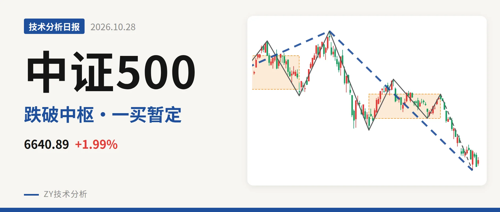
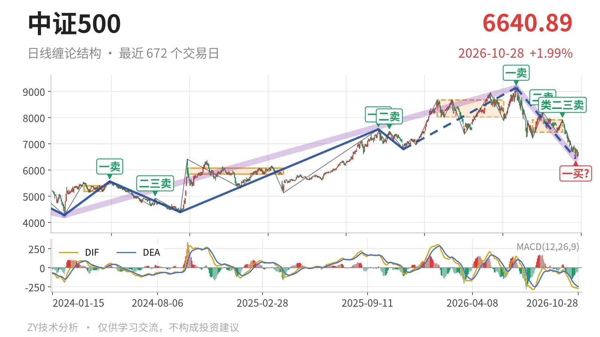
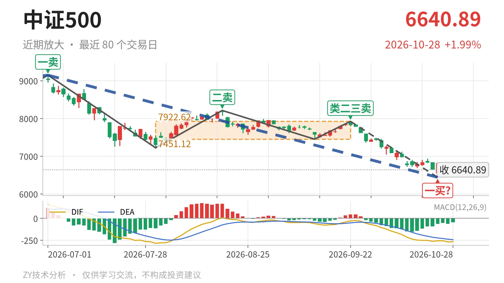

中证500｜中枢下移，6440一买暂定

最近日线中枢 7451.12—7922.62点，收盘位于中枢之下
一句话：反抽未回中枢下沿，日线结构暂偏弱，一买仍待定
📉 走势结构：日线下跌段未了，更大级别仍是上涨中的回落
日线当前主导段是7月1日至10月23日的下跌线段，从9147.56点到6440.29点，下跌约29.6%，还没有结束。更大级别看，2024年2月5日至2026年7月1日的上涨走势延续到9147.56点，当前回落还没破坏该上涨走势，只能先按上涨里的回落段处理。7月1日的一卖9147.56点因此暂只在日线笔级别成立。9月22日至10月23日的下跌笔也还在延续，10月26日后的反弹只走3根K线，尚未成笔。

🧭 中枢位置：中枢下移，收盘跌破下沿
最近一个日线笔中枢是7月30日至9月22日的7451.12—7922.62点，尚未完成。此前1月26日至6月8日的中枢为8014.66—8671.35点，中枢明显下移。最新收盘6640.89点已低于7451.12点下沿约10.9%，属于中枢下方的离开段，不是围绕最近中枢的震荡。线段中枢方面，价格也回到2016年1月27日至2017年9月12日的5655.76—6692.14点中枢上沿之下，6692点附近是第一道结构压力。
🎯 买卖点：一买暂定，上方卖点依次下移
日线笔级别上，10月23日6440.29点是一买，但所在下跌笔9月22日至10月23日没有结束，因此它是暂定的一买，会随这一笔的延续而变化。上方7月1日一卖9147.56点、8月18日二卖8211.31点、9月22日类二三卖7922.62点，一个比一个低。10月26日以来反抽最高6787.32点，未触及最近一个卖点，也未回到最近中枢下沿7451.12点。

⚡ 背驰：新低不新弱，6440点有底背驰
把9月22日至10月23日的下跌笔与7月1日至7月30日的下跌笔对比：前者跌至6440.29点，跌幅约18.7%，绿柱面积1443，DIF低点-263.4；后者跌至7221.95点，跌幅约21.1%，绿柱面积2687，DIF低点-285.2。价格新低，但绿柱面积收缩，DIF低点抬高，属新低不新弱，形成日线笔级别底背驰，10月23日一买由此而来。该下跌笔还没结束，若再破6440点且绿柱面积重新放大，底背驰结构会被改写。
🔎 关键位置：反抽不上7451点一线，结构就按三卖观察
当前反弹是对7月30日至9月22日中枢的离开后反抽。若反抽回不到7451点一线，结构上构成三卖，压力看7451点附近；若能重新站上7451点，回落更可能只是中枢扩展。上方再要看7923点附近，只有回到7923点上方，中枢下移的压力才减轻。下方观察位在6440点附近，跌破则暂定一买不再成立。结构仍偏弱：弱在收盘仍在中枢下方，且反抽尚未成笔、未回下沿。
⚠️ 本文为基于公开行情数据的缠论技术结构记录，由程序自动计算并生成，仅供学习交流，不构成任何投资建议。市场有风险，投资需谨慎。